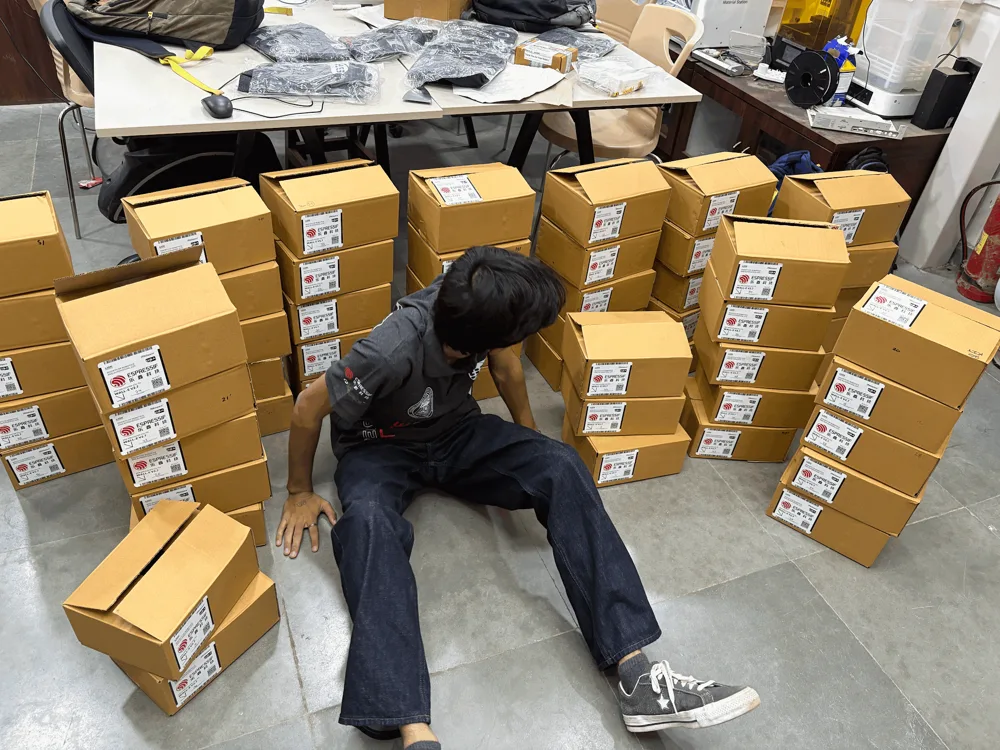
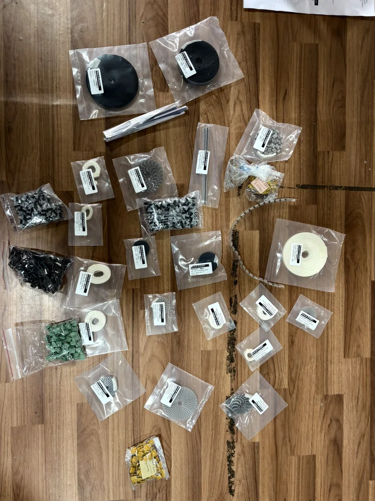
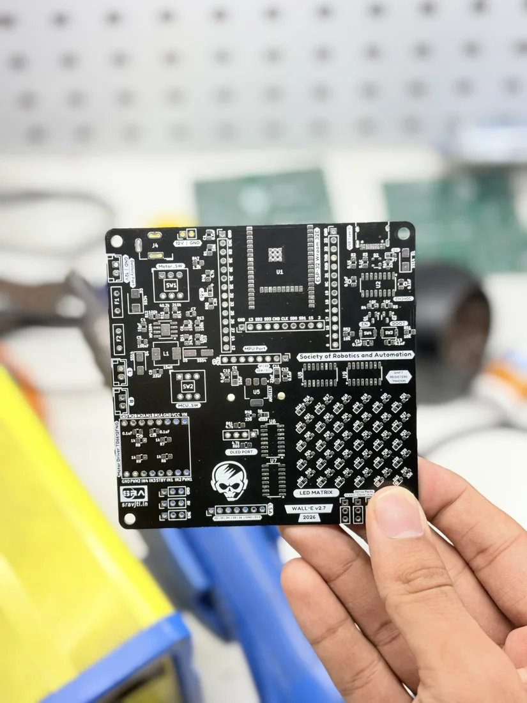
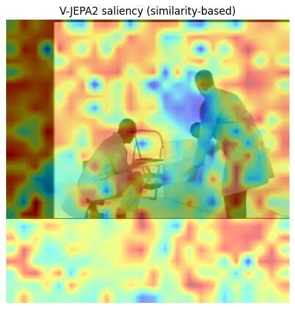
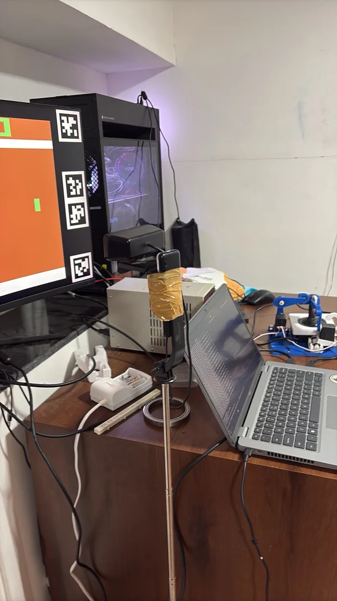
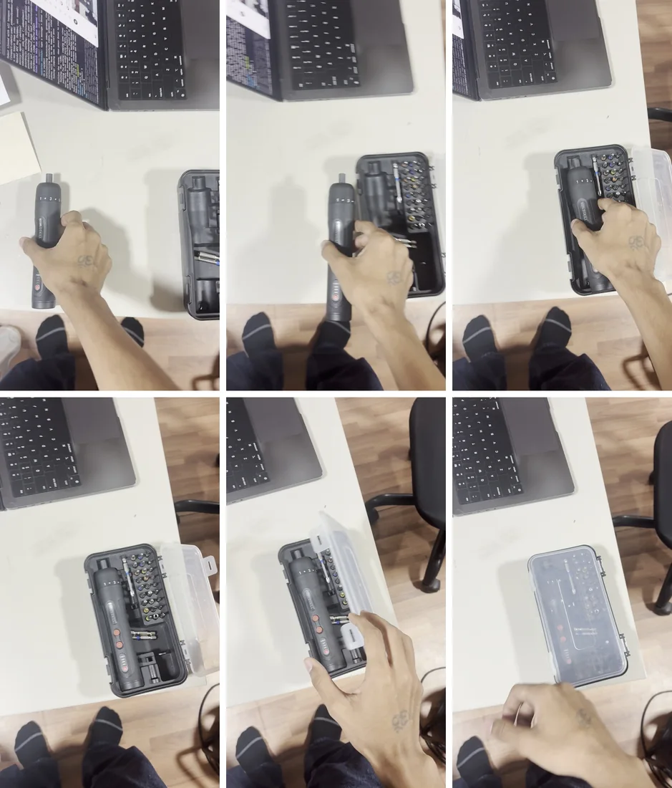

an ongoing experiment · 2025–2026
robot learning
i like building robots. getting them to learn is the part that has completely taken over my brain.
From building and teaching with SRA to getting a learned policy to pick up a cube. Then learning from demonstrations, running models on hardware, and asking a robot to fold a shirt without undoing its own work.
Demos, small wins, things that broke. Still very much a work in progress.
the hardware & the people / SRA-VJTI
build robots. get other people building.
A big part of my robotics life has been SRA-VJTI, the Society of Robotics and Automation at VJTI. Making something work on a bench is one thing. Getting it into the hands of hundreds of people is a whole other kind of experiment.
For Wall-E, I helped manufacture, test, and sell robot kits with the team for 300+ students. Wall-E is a two-wheeled, ESP32-based robot for learning line following, self-balancing, PID control, and embedded systems. The firmware and workshop material are open source.


from balancing to manipulation
I also taught robotic manipulation to 100+ students through Mario. It is a small three-degree-of-freedom arm used to explore forward and inverse kinematics, ROS, simulation, and real hardware. The robot design and code are open source too.
These are team projects that I contributed to. Manufacturing kits and teaching people how to use them belongs in this story just as much as a policy rollout does.
Photos and contribution notes from my build log.


01 / July–August 2025
sim2real has no right being this hard
That was the mood before the opening demo. By July 31, I was trying to get a policy trained in simulation to pick things up on a real arm, and asking for more GPU hours. The setup used vision; the learning thread was PPO, with FPO still in progress.
The August 6 posts are about an hour apart. First, another attempt that doesn't get there. Then: “finally fucking something.”
These were reinforcement-learning rollouts, with the policy learning the behavior rather than copying demonstrations. I was building on Stone Tao's work. The clips capture progress on a pickup; they don't establish a success rate across objects or starting positions.
The earlier attempt — 31 July 2025
02 / November 2025
what can a demonstration give you?
By November I was trying behavioral cloning: learning actions from examples of the behavior I wanted. The arm picks up a wheel and moves it toward a box. A different route to getting useful motion out of the same kind of hardware.
I was moving from sim-to-real RL, through supervised cloning, toward larger vision-action models. Compute for this work was sponsored by Prime Intellect <3
There is also a much larger source of demonstrations: people doing things. I tried HaMeR on Egocentric-10K from Eddy Xu / Build AI to reconstruct hands in 3D. The overlay below is that reconstruction, applied to human video.
Hand geometry was a first step. Extracting contact and trajectories was the next thing I wanted to try. Getting a useful robot action out of a human demonstration remains the interesting question.
03 / April–May 2026
download a model. plug it into a robot.
That this works at all still feels crazy to me. I tried Ai2's MolmoAct 2 on my setup, with unseen objects and an unseen environment. It could do some tasks out of the box, at a limited capacity. I also saw retries and gripper adjustments; dexterous tasks were still a struggle.
The model is Ai2's work; this is my deployment experiment. I ran it on a single 4090 with an admittedly buggy inference setup. The question it left me with was how much better a useful pretrained policy could get from learning on the hardware itself.

and where should the model run?
In robodal, I explored serving Physical Intelligence's π₀ from Modal and measured the trip from a client to the model and back. In the April 12 benchmark, median latency was 45.6 ms locally, 294.5 ms over the TCP portal, 374.1 ms over WebSocket, and 493.3 ms over HTTP (30 measured calls, 5 warmups).
The closed-loop tests used the ALOHA transfer-cube simulator, with only 5–10 episodes per setting. They are a useful starting point for studying deployment; real-hardware latency tolerance still needs testing. QUIC-over-TCP was experimental, with no result reported in the table.
04 / July 2026
keep the visual detail
Patch Policy, by Zhou, Cui and colleagues, caught my attention: keep the dense image-patch features instead of pooling the whole image into one representation. I reproduced it on Push-T, then tried it on hardware.
| Metric | Reproduction | Paper target |
|---|---|---|
| Final coverage | 0.772 ± 0.032 | 0.83 |
| Maximum coverage | 0.821 ± 0.028 | — |
| Success (coverage > 0.95) | 52% | — |
Coverage measures overlap with the target; it is different from the fraction of successful episodes. Repository-reported results, with the original ± notation retained.
The gap between maximum and final coverage points to an annoying behavior: reaching the target, then drifting away. Holding the result is part of the task. The implementation differences and possible fixes are documented alongside the code.
Another failure from the hardware setup: idle demonstration frames can teach a policy to do very little. The notes describe trimming idle prefixes and using a longer action horizon as the next adjustments to try.

05 / August–September 2026
the world keeps moving
Atari, with an actual joystick
We put a physical control loop around Atari: an external camera observes the screen and servos move the joystick. Suddenly the agent has to deal with a camera and an actuator's lag as well as the game.
This was a build with @4rynv, @sahilsapage, and @LakshyaLalwani7. The setup discussion has more context, including the STS3215 servos.

folding is a good way to stay humble
I went from a zero-shot towel-folding attempt to T-shirt folding with Physical Intelligence's π0.5. Then came Astra experiments with Sujal, from standing a block upright to wiping and folding. A nice first action is exciting. Finishing the sequence is harder.
The second clip is worth keeping here. It makes the next problem visible: how does the robot keep track of the state it has already created, and avoid undoing it? More folding with Tirth followed the next day.
06 / on the bench now
better data. longer tasks. more attempts.
The latest hardware thread is a handheld UMI-style gripper, inspired by Yosub Shin's yam-umi. This clip is a human-operated test of the interface. Building the tools for demonstrations is part of building the learning system.
I have also been trying human video → storyboard → robot action. That brings me back to the question from the hand-reconstruction experiments: what should the robot learn from watching someone do a task?


- How much can a pretrained policy improve by learning on the robot?
- What makes a demonstration useful: motion, contact, timing, or the mistakes around it?
- How do we get from a good first move to finishing a task, and recovering when it goes wrong?
still experimenting. if you want to talk, vibe or build something cool, hit me up.